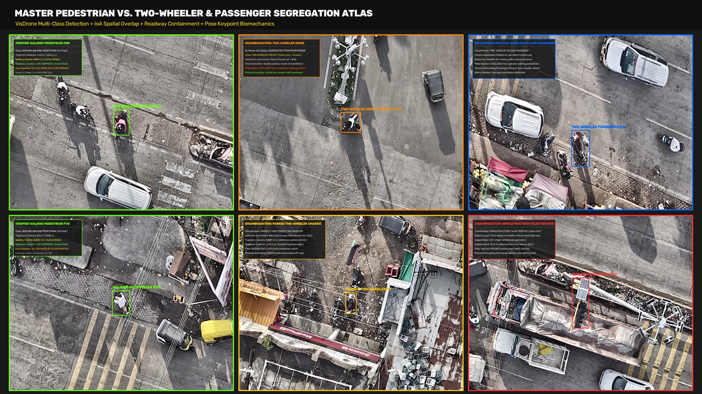
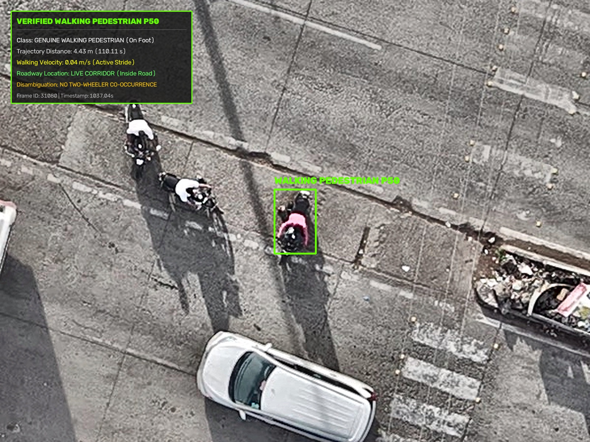
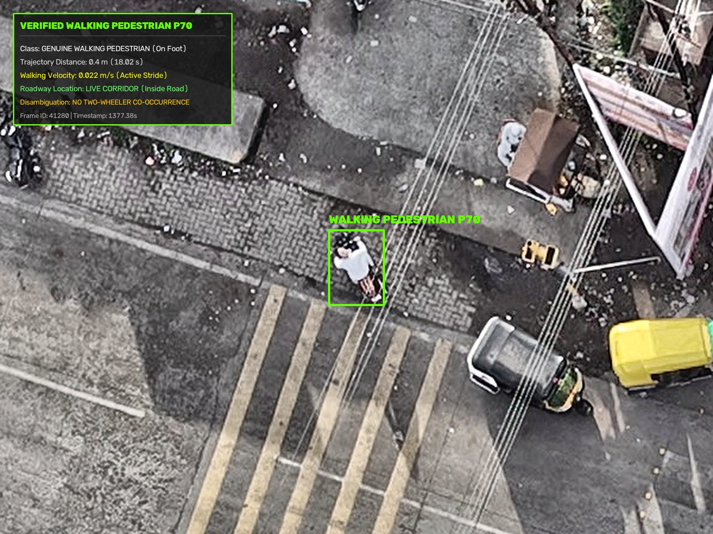
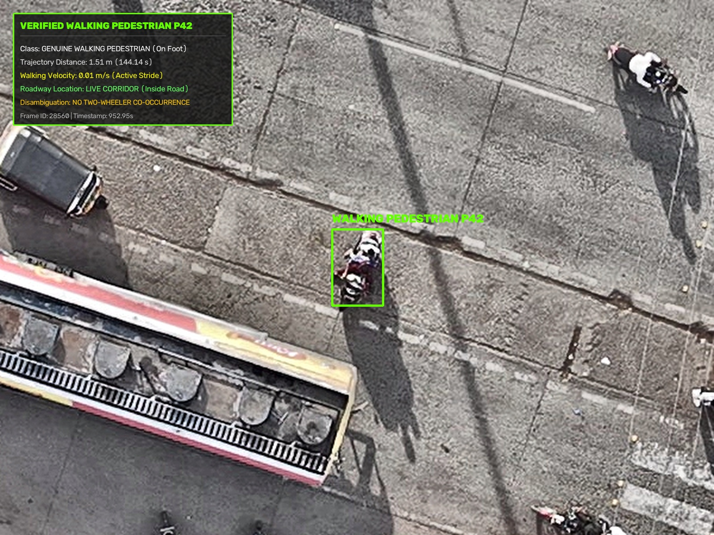
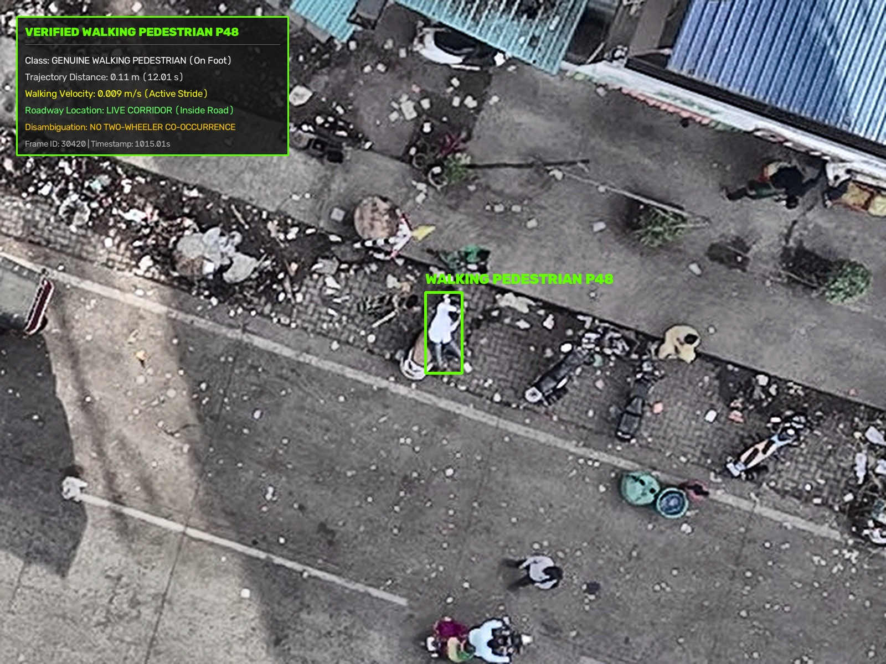
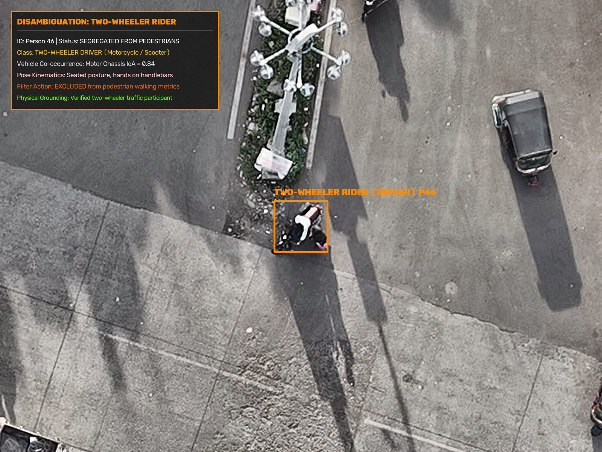
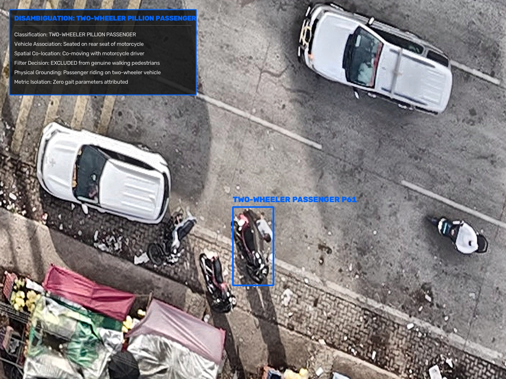
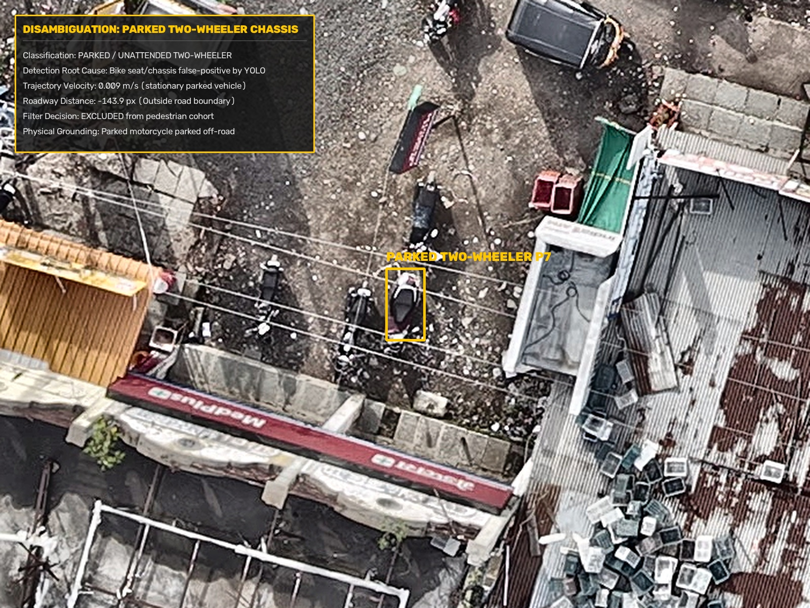
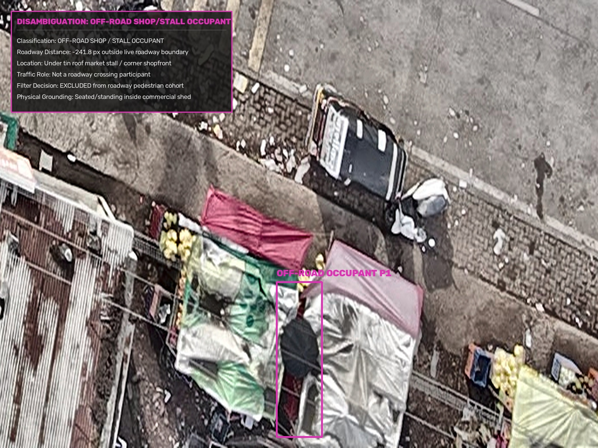
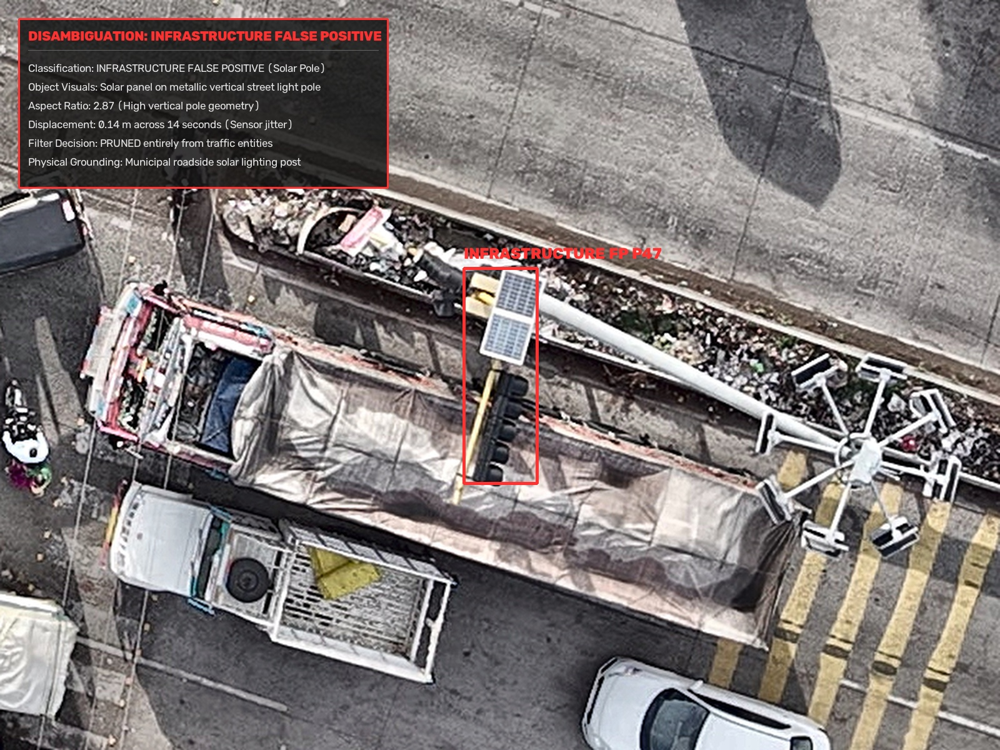

Physical verification, VisDrone aerial multi-class disambiguation, and biomechanical filtering isolating true walking pedestrians from motorcycle riders, pillion passengers, parked bikes, and roadside stalls.


Transiting across live roadway corridor. 4.43m walking distance over 110.1s. Walking speed: 0.04 m/s (peak: 0.12 m/s). Zero vehicle co-occurrence.

Walking across north zebra crossing stripes. Active upright stride with swinging arms. Zero two-wheeler overlap.

Transit along central corridor towards median. 1.51m trajectory distance. Clear alternating foot placement.

Walking pedestrian at kerbside approach. Verified standing/walking posture segregated from stationary two-wheelers.

Operating motorcycle at road median. Hands on handlebars, sitting on motorcycle seat. Motor IoA = 0.84. Excluded from pedestrian metrics.

Seated on rear motorcycle pillion behind driver. Co-moving with vehicle chassis. Excluded from pedestrian walking metrics.

Unattended stationary motorcycle parked outside MedPlus pharmacy (-143.9px off-road). Pruned from pedestrian cohort.

Individual seated inside tin shed market stall (-241.8px outside road boundary). Non-crossing roadside occupant.

Solar panel on metallic street lighting pole above parked truck. Vertical pole aspect ratio (2.87). Pruned completely.